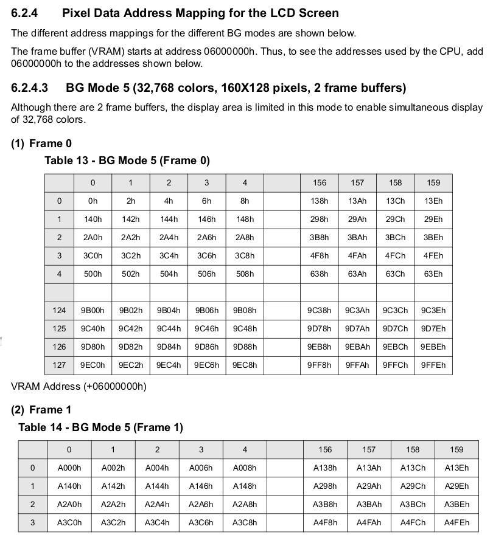
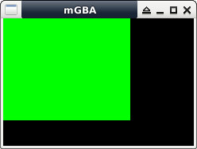

掌機 - Game Boy Advance - Assembly - BG Mode 5(bitmap)
參考資訊：
https://devkitpro.org/index.php
https://wii.leseratte10.de/devkitPro/
https://patater.com/gbaguy/gbaasm.htm
http://www.coranac.com/tonc/text/toc.htm
https://github.com/devkitPro/devkitarm-crtls
https://gist.github.com/JShorthouse/bfe49cdfad126e9163d9cb30fd3bf3c2
BG Mode 5支援bitmap(每一個像素點的顏色，由使用者指定)，固定使用BG2CNT

每一個像素點的顏色由2Bytes表示

像素填充的起始位址是0x6000000

BG Mode對應的解析度

main.s
.equ DISPCNT, 0x4000000
.equ BG2CNT, 0x400000c
.equ VRAM, 0x6000000
.global main
.arm
.text
main:
ldr r0, =DISPCNT
ldr r1, =0x405
str r1, [r0]
ldr r0, =BG2CNT
ldr r1, =0x0000
str r1, [r0]
ldr r0, =VRAM
ldr r1, =0x03e0
ldr r2, =(160*128)
1:
strh r1, [r0], #2
subs r2, r2, #1
bne 1b
2:
b 2b
完成
